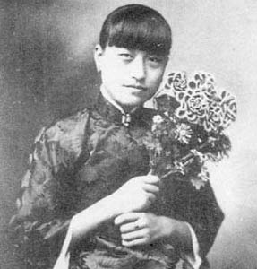

注：五十首词构成一个大故事，要看明白，请从第一首开始。
（续上）

三十四
醉老红尘非为酒，莫道黄花瘦。
冷雾入清秋，独倚蓝桥，满目波如旧。
渡头白寥风中皱，零落谁先后。
逐水更沉泥，杂骨和灰，与尔同昏昼。
《醉花阴》
三十五
红叶晓飞深院，碧云暮绕空檐。
残诗无雁寄江南，长醉鹅黄老酒。
莫笑情狂痴重，应怜露冷霜严。
晚来最怕月钩纤，直教骨魂穿透。
《西江月》
三十六
几番寒雨老秋心，且醉莫孤吟。
风来冷菊纷散，三四片，落虞琴。
愁未剪，梦难寻，酒犹斟。
玉颜谁惜，碧水空波，绿发无簪。
《诉衷情》
三十七
云萍漂泊，情思落寞，强乐难留滋味。
玉炉烟冷更伤魂，日月缚，眉凋眼坠。
冰弦怨拔，云环怒断，焚却锦罗双字。
银簪刺肉若浑无，泪血结，魂熔心死。
《鹊桥仙》
三十八
楼衔半月秋塘乱，旧檐空双燕。
夜阑风倦独无眠，往事随云远。
宵凉若水，雾迷似幻，怎如郎情薄。
天倾急雨落无由，寸寸相思断。
《贺圣朝》
三十九
瑶琴轻弄，引清风窥户，朱帘微动
秉烛临窗，细月疏星锁天洞。
摇曳梧桐碎影，池水静，暗香遥送。
独自醉，半卷罗帏，枕侧被斜拥。
无梦，二更冻。
往事袭魂惊，旧愁新痛，孽情难控。
幻困红尘死生桶。
破镜谁堪相对，孤客倦，寄何方冢。
又向晓，河汉坠，万声悲恸。
《暗香》
四十
正新秋疏雨滴黄昏，一叶坠高桐。
傍雕栏极望，西山流彩，北雁横空。
亥字高低渐淡，飘去了无踪。
白雾生天际，满目迷朦。
最是消魂此刻，莫记红尘事，怕惹情浓。
转把朱帘落，脉脉点香松。
紫烟盘，摇光荡影，恍梦浮，乱景撞双瞳。
惊遮首，赫然又见，附骨尸虫。
《八声甘州》
四十一
愁心终日对鹅黄，晚起厌梳妆。
忽见圆中新菊，惊知又近重阳。
千秋同醉，红颜惹恨，绿发招霜。
纵捣跳丸飞矢，多情犹自凄凉。
《朝中措》
四十二
袅袅烟生，盈盈水动，骊歌昔年曾唱。
商风今唤起，送千里，引蟾光漾。
船头岸上，笼雪帛银纱，迷离万象。
如思绪，个中消息，不留人赏。
怅惘。
天地熬愁，万古何堪灭，为情难放。
醉醒同困旅，叹回首，梦元空酿。
星河失桨，举目尽无梁，唯听波涨。
悲来往，别时摇泪，一般模样。
《翠楼吟》
四十三
西风碎剪，乱叶如愁飘万点。
白雾寒沙，月出惊飞千树鸦。
断魂凄雨，似去还回侵梦旅。
珠泪无由，逐浪追波几度秋。
《减字木兰花》
四十四
一帘春梦，暗锁杏花屋。
好月喜临窗，照娥眉、唇红发绿。
晓来酥雨，点点入情浓。
瑶池沐，青浮玉，浅笑倾仙族。
魂惊幻破，犹对风前烛。
孤影杂凉烟，渗墙衣、心肝恍触。
捶头抓臂，嘶叫竟无声。
行尸肉，终谁属，生死乾坤狱。
《蓦山溪》
四十五
相逢千次，尽愁怀熬梦。
早识情痴本天种。
孽缘缠，苦困前世今生。
谁解得，纵裂残躯盍用。
对长空掷泪，呆立危崖，
乱野茫茫入苍瓮。
薄命岂红颜，碧落黄泉，
魂途漫、无身堪共。
更何往、尘寰影飘摇，
乍怒起西风，夕阳如冻。
《洞仙曲》
四十六
寒墙冷院，露叶霜花，重帘不抵风虐。
云合深秋天气，朝昏垂幕。
时来断魂凄雨，夜满窗，影翻声错。
捣梦苦，起披衣，对镜芙蓉泪烁。
不了情归碧落。
惟剩壳，今生再无悲乐。
忽拔金刀，万缕青丝恨削。
天河月摇星颤，暗雷飞，漫倾冰雹。
顿转寂，结此际，心恍未觉。
《声声慢》
四十七
削尽相思发。
散丝丝、牵魂乱魄，情心寸割。
总是人痴因梦老，昔对长河浪阔。
鹊桥陷，尘根难拨。
辗转千身犹未悔，去纷纷、多少云山别，
青竹泪，化为蝶。
今宵更把瑶琴裂。
掷清商、天帷乍动，荡星摇月。
银汉堤崩倾怨雨，欲把乾坤浸没。
已无语、游思空叠。
一院秃枝风前响，正沙沙、恍又梧桐叶。
重满树、鸟音悦。
《金缕曲》
四十八
中庭白，又是月圆今夕。
微云淡、河汉横空，浅水西流浪无迹。
梧桐枝露滴，轻湿，苍苔老石。
楼阴驳、拂影枯池，败菊残荷暗堆积。
丝丝恨千尺。
系别梦蓝桥，逝者难执。
痴情万缕终何得。
尽几许霜染，百回风乱，终来一一为谁白。
可怜世间客。
幽寂。倚阶立。
忽狂笑抓土，十指成赤。
满头青发埋亭北。
渐双泪盈面，目迷心息。
茫然近晓，向天际，雾冷织。
《兰陵王》
四十九
黄泉路拥，何处托行尸。
双锦字，焚作泪，
百千丝，葬沉泥，落魄成新鬼。
情如水，收无计，
生若死，醒犹醉，觉还疑。
熬梦酿愁，辛苦咸酸味，几许人知。
埋长亭别恨，挂老树相思。
究竟缘谁，尽心痴。
入红尘戏。
惊天地，鹏展翅。
挟风雷，存永罪，终不悔。
振罗衣，立云霓，抖擞凌霄志。
银河坠，缺星堤，弯日轨，
旋经纬，乾坤回。
混浊同污，纳纳穹苍气，
激荡崔嵬，送鲸涛翻海。
掷酒一高歌，万古同杯。
《六州歌头》
五十
初归旧檐燕子，唤新晴晓顾。
薄光曳、刮影流烟，点点凝作清露。
鹅黄嫩、琼枝绽翠，微馨暗逐风弦舞。
幻紫飘红漾，迷离恍听私语。
断发牵萦，卅载蝶梦，乱车尘起处。
怡春院、笑脸迎欢，惯看闲男怨女。
怕朝昏、雕栏独倚，总无泪，枯魂空与。
玉炉冷，半卷朱帘，乍来轻雾。
蓝桥波老，别岸船横，远山浅雪著。
更满目、夭桃灼灼，撩色弄彩，
杂气分香，似他年聚。
斜阳将息，孤帆渐入，茫然怅望何依托，
忽惊觉，四碧弥飞羽。
黄云几朵，旋成万马奔雷，赤掩漫天沙土。
春寒挂月，酒暖长宵，奈四更添雨。
一滴滴、西窗难伫。
秉烛临屏，芳雪纹青，醉梅横素。
依稀可触，芙蓉心事，瑶琴留石音杳渺。
仿重闻，往昔相思句。
东隅幽白潜回，急理残妆，客官唤取。
《丰乐楼》